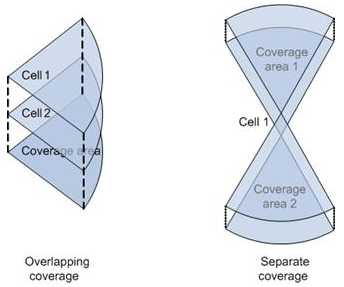
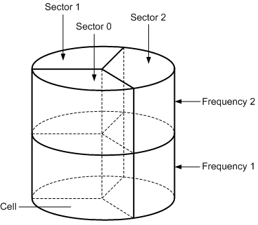
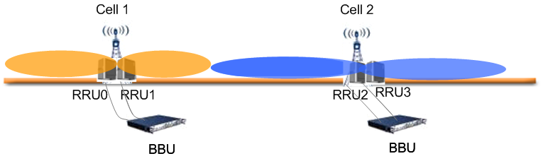
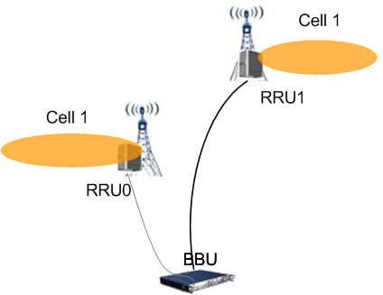
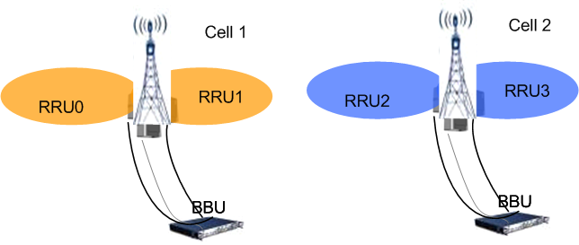
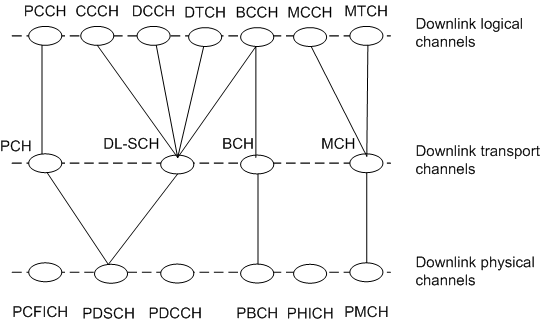
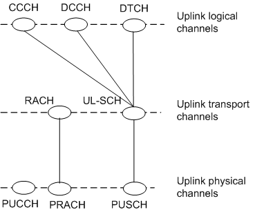
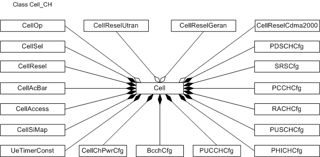
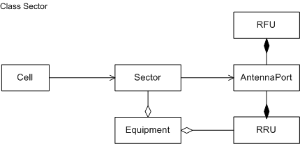

This section describes the functions and concepts of managed
object models (MOMs) and managed objects (MOs) of cells and channels.
Functions and Concepts
Cells
A cell is a radio coverage area that provides services for users.
All the cells joined together provide coverage for the entire radio
network. Coverage is classified into overlapping coverage and separate
coverage. Figure 1 shows the mapping between cells
and coverage areas.
Figure 1 Mapping between cells and coverage areas

Cell attributes include parameters related to radio services and
are used to identify cells in different types. The transmit (TX) and
receive(RX) modes of cells include 1T1R, 1T2R, 2T2R, 2T4R, 4T4R, 8T8R,
and others.
Sector
A sector is the
smallest radio coverage area. Each sector uses one or more radio carriers
to achieve coverage. Each radio carrier works at a frequency. A sector
and a carrier together compose a cell that user equipment (UEs) can
access.
Sectors are classified into omnidirectional sectors
and directional sectors. An omnidirectional sector covers a circle
area of 360 degrees with an omnidirectional antenna at the center.
Omnidirectional sectors are used for low-traffic coverage. Directional
sectors are used for high-traffic coverage. Each directional sector
uses directional antennas for coverage. In three-sector scenarios,
each directional antenna covers a sector area of 120 degrees. In six-sector
scenarios, each directional antenna covers a sector area of 60 degrees.
The coverage areas of adjacent sectors overlap each other because
the actual azimuth of each sector is slightly larger than 60 or 120
degrees.
The number of cells supported by an eNodeB is calculated
as follows: Number of cells supported by an eNodeB = Number of sectors
x Number of carriers
Figure 2 shows the mapping
between sectors, carriers, and cells. This figure uses a typical 3x2
configuration as an example. Three sectors (sectors 0-2) cover a circle
area. Each sector uses two carriers, and each cell uses one carrier.
There are a total of six cells.
Figure 2 Mapping between sectors, carriers, and cells

Figure 4 Two RRUs combined back to back in ultra-high-speed railway
scenarios

Figure 5 Multi-RRU combination in wide coverage scenarios

Figure 6 Multi-RRU combination in macro coverage scenarios

Channels
In the LTE system, channels are classified
into logical channels, transport channels, and physical channels at
the layer level:
- Logical channels are defined based on the types of data to be
transmitted.
- Transport channels are defined based on the formats of transmitted
data packets.
- Physical channels are defined based on the purposes of time and
frequency resources on the Uu interface.
Table 1 describes the classifications of
physical channels, transport channels, and logical channels.
Table 1 Classifications of physical channels, transport channels, and
logical channels
Classification
|
Channel
|
Logical channels
|
Control channels
|
BCCH(Broadcast Control CHannel)
|
PCCH(Paging Control CHannel)
|
CCCH(Common Control CHannel)
|
MCCH(Multicast Control CHannel)
|
DCCH(Dedicated Control CHannel)
|
Traffic channels
|
DTCH(Dedicated Traffic CHannel)
|
MTCH(Multicast Traffic CHannel)
|
Transport channels
|
Downlink transport channels
|
BCH(Broadcast CHannel)
|
DL-SCH(Downlink Shared CHannel)
|
PCH(Paging CHannel)
|
MCH(Multicast CHannel)
|
Uplink transport channels
|
UL-SCH(Uplink Shared CHannel)
|
RACH(Random Access CHannel)
|
physical channels
|
Downlink physical channels
|
PDSCH(Physical Downlink Shared CHannel)
|
PBCH(Physical Broadcast CHannel)
|
PMCH(Physical Multicast CHannel)
|
PCFICH(Physical Control Format Indicator CHannel)
|
PDCCH(Physical Downlink Control CHannel)
|
PHICH(Physical HARQ Indicator CHannel)
NOTE: HARQ is short for hybrid automatic repeat request.
|
Uplink physical channels
|
PUSCH(Physical Uplink Shared CHannel)
|
PUCCH(Physical Uplink Control CHannel)
|
PRACH(Physical Random Access CHannel)
|
and
Figure 8 show
the mapping between the three types of channels in the downlink and
uplink, respectively.
Figure 7 Mapping between the three types of channels in the downlink

Figure 8 Mapping between the three types of channels in the uplink

Managed Object Model
Figure 9 shows the cell and channel MOM, which is a subset of the
eNodeB MOM.
Figure 9 Cell and channel MOM

Figure 10 shows the sector MOM, which is a subset of the
eNodeB MOM.
Figure 10 Cell and channel MOM

Cell MOs
Cell MOs are defined as follows:
- Cell defines the basic information
about a cell. Operators need to plan and design parameters such as
the E-UTRAN cell global identifier (ECGI), E-UTRA absolute radio frequency
channel number (EARFCN), physical cell identifier (PCI), and tracking
area code (TAC). The number of cells supported by an eNodeB relates
to the hardware configuration of the eNodeB. In eRAN3.0, an eNodeB
supports a maximum of 18 cells.
- CellOp defines the information
about the operator of a cell. The number of CellOp MOs set for each cell varies depending on the working
mode.
- If the ENodeBSharingMode parameter is set to INDEPENDENT,
only one CellOp MO can be set
for each cell and the corresponding cell operator must be the primary
operator.
- If the ENodeBSharingMode parameter is set to SEPARATED_FREQ,
only one CellOp MO can be set
for each cell.
- If the ENodeBSharingMode parameter is set to SHARED_FREQ,
a maximum of four CellOp MOs
can be set for each cell.
- CellAccess defines UE
access parameters such as the cell barring status and reservation
status. Operators need to set these parameters, which are then broadcast
using system information.
- CellAcBar defines barring
parameters for access classes (ACs). Operators need to set these parameters,
which are then broadcast using system information.
- CellSiMap defines the
transport periods of system information blocks (SIBs) in a cell. Operators
can set the transport period of an SIB. The eNodeB uses the default
parameter values if operators do not set the transport periods of
SIBs.
- CellSel defines parameters
used during cell selection. Operators need to set these parameters,
which are then broadcast using system information.
- CellResel defines intra-
and inter-frequency cell reselection parameters in the Evolved Universal
Terrestrial Radio Access Network (E-UTRAN) system. Operators need
to set these parameters, which are then broadcast using system information.
- CellReselGeran defines
parameters used for UEs to perform reselection from an E-UTRAN cell
to a GSM/EDGE Radio Access Network (GERAN) cell. This MO is set only
when GERANs are deployed around an E-UTRAN.
- CellReselUtran defines
parameters used for UEs to perform reselection from an E-UTRAN cell
to a Universal Terrestrial Radio Access Network (UTRAN) cell. This
MO is set only when UTRANs are deployed around an E-UTRAN.
- CellReselCdma2000 defines parameters used for UEs to perform reselection from an E-UTRAN
cell to a CDMA2000 cell. This MO is set only when CDMA2000 networks
are deployed around an E-UTRAN.
- UeTimerConst defines
UE timer parameters. Operators need to set these parameters, which
are then broadcast using system information. The eNodeB uses the default
parameter values if operators do not set these parameters.
- CellChPwrCfg defines
transmit power used by downlink channels in a cell.
Sector MOs
Sector MOs are defined as follows:
- Cell defines the basic information
about a cell. Network planning personnel need to configure the basic
information such as the cell ID and RF information as required.
- Sector defines a
sector, which is the smallest radio coverage unit.
- AntennaPort defines
an antenna port on an RRU or radio frequency unit (RFU). The RRU or
RFU supplies power to and exchanges signaling with a remote electrical
tilt (RET) antenna or tower-mounted amplifier (TMA) through the antenna
port. In addition, the RRU or RFU transmits RF signals to subunits
in an RET antenna or TMA through the antenna port.
- Equipment defines
a root object, which manages equipment-class MOs. Before a sector
is created, Equipment must already be created because it is the parent object of the sector.
- RRU RRU defines parameters
related to an RRU. The RRU provide ports for sending and receiving
baseband and RF signals and process uplink and downlink RF signals.
- RFU defines parameters
related to an RFU. The RFU provide ports for sending and receiving
baseband and RF signals and process uplink and downlink RF signals.
Channel MOs
Channel MOs are defined as follows:
- BcchCfg defines parameters
related to a BCCH. The BCCH is a downlink logical channel that broadcasts
system control information.
- RACHCfg defines parameters
related to an RACH. The RACH is an uplink transport channel that is
used for UEs to initiate initial access.
- PCCHCfg defines parameters
related to a PCCH. The PCCH is a downlink logical channel that transmits
paging messages and system information update indicators.
- PDSCHCfg defines parameters
related to a PDSCH. The PDSCH carries downlink shared transport channels
and paging channels. All UEs in a cell share downlink transport channels
to transmit downlink data. Paging channels are used to transmit paging
messages.
- PUSCHCfg defines parameters
related to a PUSCH. The PUSCH carries uplink shared transport channels.
All UEs in a cell share uplink transport channels to transmit uplink
data.
- PHICHCfg defines parameters
related to a PHICH. The PHICH is used to transmit downlink hybrid
automatic repeat request (HARQ) signals.
- PUCCHCfg defines parameters
related to a PUCCH. The PUCCH is used for UEs to transmit physical
uplink control signals.
- SRSCfg defines parameters
related to time and frequency resources used by a sounding reference
signal (SRS). The SRS is a physical signal that a UE transmits to
the eNodeB to evaluate uplink channel conditions.